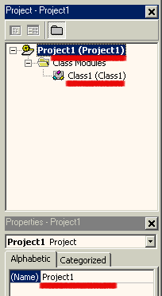

The Component Object Model (COM) is the technology that defines and implements mechanisms that enable software components, such as applications, data objects, controls, and services, to interact as objects. The COM support in AFL introduced in version 3.75beta allows you to create instances of COM objects and call the functions (methods) exposed by those objects.
The COM object can be created in virtually any language including any C/C++ flavor, Visual Basic, Delphi, etc. This enables you to write parts of your indicators, systems, explorations and commentaries in the language of your choice and run them at full compiled code speed.
The scripting engines used by AFL scripting host (JScript and VBScript) also expose themselves as COM objects. AFL COM support now allows you to call functions defined in the scripting code directly from AFL without using variables to pass data to and retrieve data from the script.
Until version 3.75 the only way to exchange information between AFL and the script was by using variables - this technique is explained in detail in AFL scripting host documentation.
Let's suppose we need a function that calculates second order IIR (infinite impulse response) filter:
y[ n ] = f0 * x[ n ] + f1 * y[ n - 1 ] + f2 * y[ n - 2 ]
Please note that well-known exponential smoothing is a first order IIR filter. Implementing higher order filters minimizes lag, therefore our second order IIR may be used as a "better" EMA.
In the "old way" we would need to write the following code:
EnableScript("jscript");
x = ( High + Low )/2;
f0 = 0.2;
f1 = 1.2;
f2 = -0.4;
<%
x = VBArray( AFL( "x" ) ).toArray();
f0 = AFL( "f0" );
f1 = AFL( "f1" );
f2 = AFL( "f2" );
y = new Array();
// initialize first 2 elements of result array
y[ 0 ] = x[ 0 ];
y[ 1 ] = x[ 1 ]
for( i = 2; i < x.length; i++ )
{
y[ i ] = f0 * x[ i ] + f1 * y[ i - 1 ] + f2 * y[ i - 2 ];
}
AFL.Var("y") = y;
%>
Graph0 = Close;
Graph0Style = 64;
Graph1 = y;
While it is OK for one-time use, if we need such a function multiple times we would have to repeat the scripting code which is not very nice. Much nicer approach is to have a function that can be called from multiple places without the need to repeat the same code. Defining functions in JScript or VBScript is no problem at all:
EnableScript("jscript");
<%
function IIR2( x, f0, f1, f2 )
{
x = VBArray( x ).toArray();
y = new Array();
// initialize first 2 elements of result array
y[ 0 ] = x[ 0 ];
y[ 1 ] = x[ 1 ];
for( i = 2; i < x.length; i++ )
{
y[ i ] = f0 * x[ i ] + f1 * y[ i - 1 ] + f2 * y[ i - 2 ];
}
return y;
}
%>
But how to call such a function from AFL?
The most important thing is that the script engine exposes itself as a COM object. A new AFL function GetScriptObject() can be used to obtain access to the script engine. The rest is simple - once we define the function in the script it is exposed as a method of the script object retrieved by GetScriptObject:
script = GetScriptObject();
Graph0 = script.IIR2( ( High + Low )/2, 0.2, 1.2, -0.4 );
Graph1 = script.IIR2( ( Open + Close )/2, 0.2, 1.0, -0.2 ); // call it again
and again...
Note also, that with this approach we may pass additional arguments so our IIR2 filter may be reused with various smoothing parameters.
So, thanks to a new COM support in AFL, you can define functions in scripts and call those functions from multiple places in your formula with ease.
In a very similar way we can call functions (methods) in external COM objects directly from the AFL formula. Here I will show how to write such an external ActiveX in Visual Basic but you can use any other language for this (Delphi for example is a very good choice for creating ActiveX/COM objects).
It is quite easy to create your own ActiveX DLL in Visual Basic, here are the steps required:
|
 |
As an example we will implement a function similar to the one shown in JScript. The function will calculate second order Infinite Impulse Response filter. We will call this function "IIR2"
Public Function IIR2(InputArray() As Variant, f0 As Variant, f1 As Variant,
f2 As Variant) As Variant
Dim Result()
ReDim Result(UBound(InputArray)) ' size the Result array to match InputArray
'initialize first two elements
Result(0) = InputArray(0)
Result(1) = InputArray(1)
For i = 2 To UBound(InputArray)
Result(i) = f0 * InputArray(i) + f1 * Result(i - 1) + f2
* Result(i - 2)
Next
IIR2 = Result
End Function
The code is quite similar to the JScript version. The main difference is declaring types. As you can see all variables passed from and to AFL must be declared as Variants. This is so, because AmiBroker does not know what kind of object it is communicating with and puts all arguments into the most universal Variant type and expects the function to return the value as Variant also. Currently AmiBroker can pass to your object floating point numbers, arrays of floating point numbers, strings, and pointers to other objects (dispatch pointers) - all of them packed into Variant type. When you write the ActiveX, it is your responsibility to interpret Variants received from AmiBroker correctly.
Now you should choose Run->Start in Visual Basic to compile and run the component. The code in Visual Basic will wait until an external process accesses the code.
To access the freshly created ActiveX we will use the following AFL formula (enter it in the Formula Editor and press Apply):
myobj = CreateObject("MyAFLObject.Class1");
Graph0 = Close;
Graph0Style = 64;
Graph1 = myobj.IIR2( Close, 0.2, 1.2, -0.4 );
The AFL formula simply creates the instance of our ActiveX object and calls
its member function (IIR2). Note that we are using the new dot (.) operator to access
myobj members.
Now click the "Apply" button in the Formula Editor to see how this
setup works. You should see a candlestick chart with a quite nice moving
average.
2.4 Conclusion
The introduction of COM support in AFL brings even more power to AFL and AmiBroker. Now you can write indicators, trading systems, explorations and commentaries using custom functions that are easy to create using a scripting language or full-featured development environments such as Visual Basic, Borland Delphi, C++ Builder, Visual C++ and many others. Using integrated development environments like those mentioned makes debugging, testing and development much easier and faster.
Also, the resulting compiled code executes several times faster than interpreted script or AFL.
But this is not the end of the story... C/C++ programmers can choose to write plugin DLLs that do not use COM technology at all. Plugin DLLs have some additional features including the ability to call back AFL built-in functions, directly retrieve and set AFL variables and support automatic syntax coloring of functions exposed by the plugin.
This topic is covered in the AmiBroker Development Kit available from the members' area of the AmiBroker site.